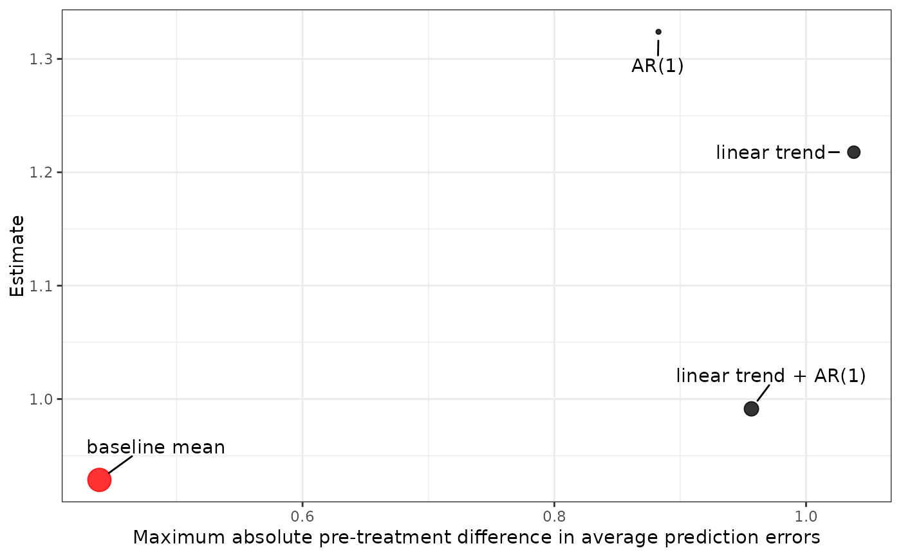

apm_est() computes the ATTs from the models previously fit by apm_pre(), choosing the optimal one by minimizing the largest absolute average prediction error across validation times. Optionally, this process can be simulated to arrive at a distribution of ATTs that accounts for the uncertainty in selecting the optimal model. plot() plots the resulting ATT(s).
Arguments
- fits
an
apm_pre_fitsobject; the output of a call toapm_pre().- post_time
the value of the time variable considered post-treatment, for which the ATT is to be estimated.
- M
the sensitivity parameter for set identification. For
apm_est(), the default is 0, i.e., under point identification. Forsummary(), this can be set to one or more positive values to produce uncertainty bounds for each value. Only allowed when not set to 0 in the call toapm_est(). See Details.- R
the number of bootstrap iterations used to compute the sampling variance of the ATT. Default is 1000. More is better but takes longer.
- all_models
logical; whether to compute ATTs for all models (TRUE) or just those with BMA weights greater than 0 (FALSE, default). This will not effect the final estimates but leaving asFALSEcan speed up computation when some models have BMA weights of 0.- cl
a cluster object created by
parallel::makeCluster(), an integer to indicate number of child-processes (ignored on Windows) for parallel evaluations, or"future"to use a future backend.NULL(default) refers to sequential evaluation. Seefwb::fwb()for details and issues related to replicability.- verbose
logical; whether to print information about the progress of the estimation, including a progress bar. Default isTRUE.- ...
other arguments passed to
fwb::fwb().- level
the desired confidence level. Set to 0 to ignore sampling variation in computing the interval bounds. Default is .95.
- x, object
an
apm_estobject; the output of a call toapm_est().- label
logical; whether to label the ATT estimates. Requires ggrepel to be installed. Default isTRUE.- size.weights
logicsl; whether to size the points based on their BMA weights. Default isTRUE.
Value
apm_est() returns an apm_est object, which contains the ATT estimates and their variance estimates. The following components are included:
- BMA_att
the BMA-weighted ATT
- atts
a 1-column matrix containing the ATT estimates from each model (when
all_models = FALSE, only models with positive BMA weights are included)- BMA_var
the total variance estimate for the BMA-weighted ATT incorporating the variance due to sampling and due to model selection
- BMA_var_b
the bootstrap-based component of the variance estimate for the BMA-weighted ATT due to sampling
- BMA_var_m
the component of the variance estimate for the BMA-weighted ATT due to model selection
- M
the value of the sensitivity parameter
M- post_time
the value supplied to
post_time- observed_means
a matrix of the observed outcome means at each pre-treatment validation period
- pred_errors
an array containing the average prediction errors for each model and each pre-treatment validation period
- pred_error_diffs
a matrix containing the difference in average prediction errors between groups for each model and each pre-treatment validation period
- BMA_weights
the BMA weights computed by
apm_pre()(whenall_models = FALSE, only positive BMA weights are included)- boot_out
an
fwbobject containing the bootstrap results
plot() returns a ggplot object displaying the ATT for each model plotted against the maximum absolute difference in average prediction errors for that model. The model with the lowest maximum absolute difference in average prediction errors is displayed in red.
summary() produces a table with the BMA-weighted ATT, it's estimated standard error, and confidence interval limits. When M is greater than 0, additional rows for each value of M are included with the lower and upper bound. When level is greater than 0, these bounds include the uncertainty due to sampling and model selection; otherwise, they correspond to the set identification bounds for the ATT.
Details
apm_est() estimates the ATT from each model and combines them to form the BMA-weighted estimate of the ATT. Uncertainty for the BMA-weighted ATT is computed by combining two variance components, one that account for sampling and another that accounts for model selection. The component due to sampling is computed by bootstrapping the process of fitting the outcome model for the post-treatment outcome identified by post_time and computing the difference between the observed outcome mean difference and the model-predicted outcome mean difference. The fractional weighted bootstrap as implemented in fwb::fwb() is used to ensure no units are dropped from the analysis. In each bootstrap sample, the BMA-weighted ATT estimate is computed as the weighted average of the ATTs computed from the models using the fixed BMA weights computed by apm_pre(), and the variance is computed as the empirical variance over the bootstrapped estimates. The variance component due to model selection is computed as the BMA-weighted variance of the original ATTs.
When M is greater than 0, bounds for set identification and their uncertainty are additionally computed. This involves bootstrapping the fitting of the pre-period models along with post-treatment models on order to compute the maximum absolute difference in average prediction errors for each model across validation periods. Each bootstrap sample produces a margin of error for each model computed as \(M \times \delta_m\) where \(\delta_m\) is the maximum absolute difference in average prediction errors for model \(m\). Upper and lower bounds for the set-identified BMA-weighted ATT are computed as \(\text{ATT}_m \pm M \times \delta_m\). The same procedure as above is then used to compute the variance of these bounds.
summary() displays the BMA-weighted ATT estimate, its standard error, and Wald confidence intervals. When M is greater than 0, bounds for the set-identified ATT are displayed in the confidence interval bound columns. The lower bound is computed as \(\text{LB} - \sigma_{LB}Z_{l}\) and the upper bound as \(\text{UB} + \sigma_{UB}Z_{l}\), where \(\text{LB}\) and \(\text{UB}\) are the lower and upper bounds, \(\sigma_{LB}\) and \(\sigma_{UB}\) are their variances accounting for sampling and model selection, and \(Z_{l}\) is the critical Z-statistic for confidence level \(l\). To display the set-identification bounds themselves, one should set level = 0.
See also
apm_pre() for computing the BMA weights; fwb::fwb() for the fractional weighted bootstrap.
Examples
data("ptpdata")
# Combination of 4 models: 2 time trends, 2 lags
models <- apm_mod(list(crude_rate ~ 1),
lag = 0:1,
time_trend = 0:1)
models
#> - Model 1: baseline mean
#> crude_rate ~ 1
#> family: gaussian(link = "identity")
#> outcome lag: none
#> outcome diff: none
#> log outcome: no
#> time trend: none
#> unit fixed effects: no
#>
#> - Model 2: AR(1)
#> crude_rate ~ 1
#> family: gaussian(link = "identity")
#> outcome lag: 1
#> outcome diff: none
#> log outcome: no
#> time trend: none
#> unit fixed effects: no
#>
#> - Model 3: linear trend
#> crude_rate ~ 1
#> family: gaussian(link = "identity")
#> outcome lag: none
#> outcome diff: none
#> log outcome: no
#> time trend: linear
#> unit fixed effects: no
#>
#> - Model 4: linear trend + AR(1)
#> crude_rate ~ 1
#> family: gaussian(link = "identity")
#> outcome lag: 1
#> outcome diff: none
#> log outcome: no
#> time trend: linear
#> unit fixed effects: no
# Fit the models to data; unit_var must be supplied for
# fixed effects
fits <- apm_pre(models,
data = ptpdata,
group_var = "group",
time_var = "year",
val_times = 2004:2007,
unit_var = "state",
nsim = 100,
verbose = FALSE)
est <- apm_est(fits,
post_time = 2008,
M = 1,
R = 20,
verbose = FALSE)
est
#> An `apm_est` object
#>
#> - grouping variable: group
#> - unit variable: state
#> - time variable: year
#> - validation times:
#> - post-treatment time: 2008
#> - sensitivity parameter (M): 1
#> - bootstrap replications: 20
#>
#> Use `summary()` or `plot()` to examine estimates and uncertainty bounds.
# ATT estimate and bounds for M = 1
summary(est)
#> Estimate Std. Error CI low CI high z_value Pr(>|z|)
#> ATT 1.0305 0.1745 0.6884 1.3726 5.904 3.55e-09 ***
#> M = 1 . . -0.1331 2.5279 . .
#> ---
#> Signif. codes: 0 ‘***’ 0.001 ‘**’ 0.01 ‘*’ 0.05 ‘.’ 0.1 ‘ ’ 1
# Bounds for other values of M
summary(est, M = c(.5, 1, 1.5, 2))
#> Estimate Std. Error CI low CI high z_value Pr(>|z|)
#> ATT 1.0305 0.1745 0.6884 1.3730 5.904 3.55e-09 ***
#> M = 0.5 . . 0.3839 1.9270 . .
#> M = 1 . . -0.1331 2.5280 . .
#> M = 1.5 . . -0.7242 3.1420 . .
#> M = 2 . . -1.3353 3.7620 . .
#> ---
#> Signif. codes: 0 ‘***’ 0.001 ‘**’ 0.01 ‘*’ 0.05 ‘.’ 0.1 ‘ ’ 1
# Set-ID bounds without uncertainty
summary(est, level = 0)
#> Estimate Std. Error CI low CI high z_value Pr(>|z|)
#> ATT 1.0305 0.1745 1.0305 1.0305 5.904 3.55e-09 ***
#> M = 1 . . 0.3368 1.7242 . .
#> ---
#> Signif. codes: 0 ‘***’ 0.001 ‘**’ 0.01 ‘*’ 0.05 ‘.’ 0.1 ‘ ’ 1
plot(est)
